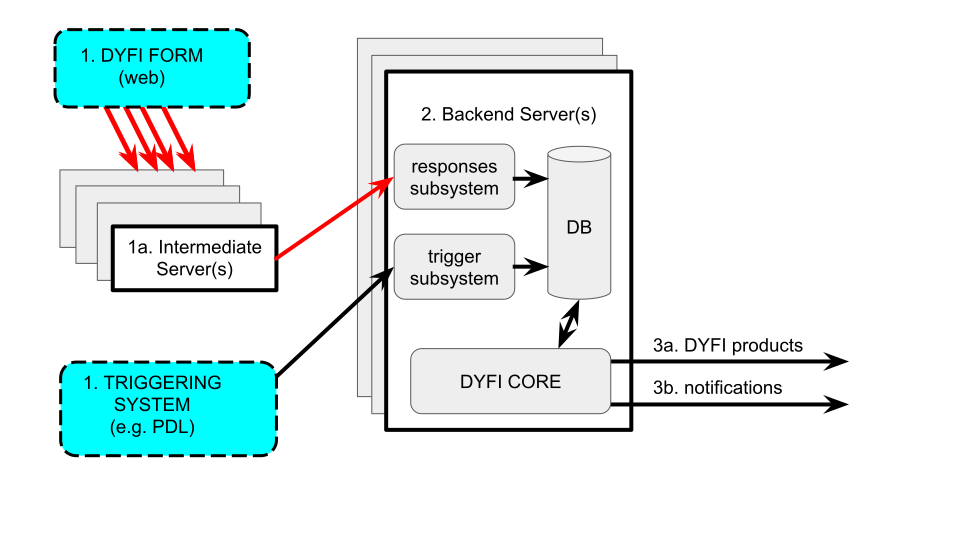

Implementation Guide¶
The implementation of DYFI Version 4 features a number of changes from previous versions to bring it up-to-date with modern programming standards:
- Development is now in Github, an open-source repository.
- The codebase now uses Python in line with coding standards of other USGS earthquake products.
- Graphics rendering has moved from Generic Mapping Tools (GMT) to Leaflet rendering for map products, and D3 for graph products.
- The database is now implemented in Sqlite3 for its lighter resource footprint.
System flowchart¶
The following diagram shows the ideal configuration for the DYFI system, including adjunct systems for data input and output. This CORE manual only concerns itself with the functionality of the backend server.
Note the two independent inputs to the DYFI system: event triggers (which include earthquake origin information) and user responses (which may or may not be event-aware).
Installation¶
DYFI installation should be straightforward. Miniconda (https://conda.io) is the preferred package and environment manager. The included install script (install.sh) uses conda to install the required packages automatically.
The file environment.yml file lists the DYFI dependencies.
Python modules:
| apng | For makemovie.py |
|
| codecov | For debugging only | |
| defusedxml | 0.5.0+ | For creating contents.xml |
| geopy | 1.11.0+ | Use great_circle for filtering and graphing |
| geojson | 1.3.3+ | For output products |
| numpy | 1.11.2 | Numerical manipulation in graph.py |
| pytest | For debugging only | |
| pytest-cov | For debugging only | |
| pyyaml | For configuration files | |
| sqlite | Implements the DYFI database |
Additional dependencies¶
- PhantomJS (http://phantomjs.org/) renders maps into static images (PNG). Normally, the
install.shscript installs this via conda. - Leaflet (http://leafletjs.com) is used to render maps from GeoJSON-formatted data. DYFI installs Leaflet locally in the leaflet/inc directory. You can update those Leaflet components manually or use a CDN for the latest version (see the commented portion of the leaflet/viewer.html file for an example of invoking Leaflet via CDN.)
- utm (https://pypi.python.org/pypi/utm) is a Python package for converting latitude/longitude coordinates into UTM (Universal Transverse Mercator) strings. DYFI includes a local version of this module in the directory dyfi/thirdparty/utm.
Configuration file¶
The DYFI4 configuration file config.yml is in the YAML file format (http://yaml.org).
Most DYFI4 executables can be called with the –config flag to use another, custom configuration file (for testing, for example.)
The file has five sections:
- db: This describes the location and type of the DYFI database (see below).
- directories: This has links to the data directories.
- data: This points to the output directories. The DYFI4 products for each event ID are stored here, under its own event ID subdirectory.
- leaflet: This points to the directory where Leaflet processing is done. See Generation of dynamic and static image maps.
- executables: This lists various external programs used by DYFI. The screenshot line is used to call PhantomJS (see Generation of dynamic and static image maps). Do not change this unless you are modifying the static image generation process.
- products: This is a link to
lib/products.ymlwhich lists the supported output types and formats. The DYFI process iterates through this file to create its output products. - filter: This holds settings for filtering entries (to reject bogus or suspect ones). See Filtering of entries.
Database implementation¶
The DYFI database is currently implemented as a Sqlite3 database. A sample set of databases is included with installation in /tests/db/.
We recommend that the tables be placed in a directory such as /db/. To change the database location, modify the settings for each database file in config.yml file under db:files. Each table is a separate file.
For details on the various database tables see Input streams.
Event table¶
| File | event.db |
| Table name | event |
This table holds data for individual earthquake events; most importantly, event earthquake location and time. Each row corresponds to one event.
This table is normally populated by event information from the USGS Comprehensive Earthquake Catalog, or ComCat (https://earthquake.usgs.gov/data/comcat/). This table holds data information for individual earthquake events.
A sample table is included (beginning from 2015).
Extended tables¶
| File | extended_NNNN.db |
| Table name | extended_NNNN |
This table holds data for DYFI felt data. Each row corresponds to one user response. This table is populated from the DYFI Questionnaire (see https://earthquake.usgs.gov/data/dyfi/background.php).
Because of the size of the DYFI response data (2 million+ responses as of 2018), each year of data is stored in a separate file. The files and tables are named extended_NNNN.db and extended_NNNN where NNNN is the 4 digit year. The earliest provided year is 2003. Events before this are stored in the file extended_pre.db in the table extended_pre.
Sample extended tables for 2015 and 2016 are included, with personally identifiable information (PII) redacted.
Generation of dynamic and static image maps¶
Note
The PhantomJS package must be installed to create static images. This is a change from the previous version of DYFI which used Generic Mapping Tools (GMT) for plotting and map generation.
DYFI uses PhantomJS to turn Leaflet-based maps into static images. This section outlines the procedure used by DYFI for creating these products. See individual module entries for details.
- The Aggregate module creates the aggregated data in GeoJSON format aggregated entries and the computed intensities.
- The Map class adds the event data (epicentral location and magnitude).
- The
Map.toImagemethod saves the GeoJSON data into a temporary JavaScript file in theleafletdirectory. It also creates a temporary filename for the output (PNG) image. Map.toImagecalls the scriptleaflet/capture.jsand the temporary datafile as arguments.- The
leaflet/capture.jsscript takes uses the fileleaflet/viewer.html.templateas a template to create a temporary viewer HTML file. This HTML file will load the JavaScript data (step 3) directly as an inline script. leaflet/capture.jscalls PhantomJS on the viewer HTML and renders it into a static (PNG) image with the temporary output filename (step 3).Map.toImagemoves the temporary output into the correct event ID’sdatadirectory.
Note
Rather than dynamically loading the event and response data, this method was chosen as the simplest, most robust way avoid CORS and other browser permission issues, and asynchronous loading problems with PhantomJS.
Auxiliary processes¶
The following topics are beyond the scope this CORE manual because they describe systems exclusive to the USGS. These topics will be described elsewhere.
- USGS Event Page integration
- USGS Product Distribution Layer, or PDL (https://usgs.github.io/pdl/)
- Event triggering
- Implementation of the questionnaire
- Transfer of user data to the backend servers
- Product distribution: PDL, Event Pages